4130B41 outlet pipe from pump to power steering case r r for right hand drive versions
- Path
- Procedures > 41 STEERING > 4130 POWER ASSISTED STEERING > 4130B power steering hydraulic sytem > 4130B41 outlet pipe from pump to power steering case r r for right hand drive versions
- Kind
- repair procedure (removal / refitting; the operation number is the code)
- Applies to
- engines: 1.6 TS , 1.8 TS, 2.5 V6, 2.4 JTD 10v; all production periods
- Interactive page
- https://sloeber94.github.io/elrnDB-a156/en/#/3238160
Applies to: engines: 1.6 TS , 1.8 TS; all production periods; only with equipment: Right hand drive
 Removing
Removing
 Refitting
RefittingPosition the vehicle on the ramp.
Ensure that the ignition key is in stop position, then disconnect the battery negative terminal.
 | Name | Connector |
|---|---|---|
- | Battery |
7055B54 under-engine guard - r r .
1076B50 exhaust pipe attachment to engine - r + r .
1076A32 exhaust rigid mount - r r .
1016A40 ignition coil cover on cylinder head- r+r .
Drain the brake-clutch fluid from the reservoir using a suitable syringe.
1008C10 power unit upper reaction link r r .
1. Disconnect the rapid attachment for the fuel vapour recirculation pipe.
2. Release the fuel vapour recirculation pipe from the band on the power steering fluid reservoir.
3. Release the coolant return pipe to the coolant reservoir from the attachments and move it aside.
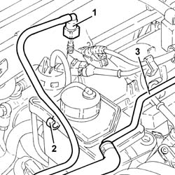
Applies to: engines: 1.6 TS , 1.8 TS; all production periods; only with equipment: Right hand drive
1. Undo the bolts (1a) and raise the power steering fluid reservoir (1b) as much as necessary.
2. Disconnect the pipes from the power steering fluid reservoir, then remove it.
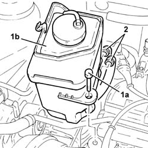
Applies to: engines: 1.6 TS , 1.8 TS; all production periods; only with equipment: Right hand drive
1. Disconnect the electrical connection from the variable geometry solenoid valve.
| Name | Connector |
|---|---|---|
1 | Variable geometry control solenoid |
2. Disconnect the vacuum intake pipe.
3. Undo the bolts (3a), disconnect the linkage (3b) and remove the air flow switching device actuator (3c).
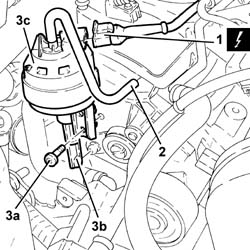
Applies to: engines: 1.6 TS , 1.8 TS; all production periods; only with equipment: Right hand drive
1. Undo the connector (1a) and disconnect the pipe from pump to power steering box (1b), pump side.
2. Release the pipe from the pump to the steering box, from the fixing band.
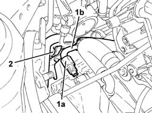
Applies to: engines: 1.6 TS , 1.8 TS; all production periods; only with equipment: Right hand drive
1. Undo the connector (1a) and disconnect the pipe from pump to power steering box (1b), steering box side.
2. Remove the pipe from pump to power steering box.
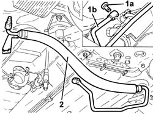
Applies to: engines: 1.6 TS , 1.8 TS; all production periods; only with equipment: Right hand drive
Refitting
Removing1. Refit in its seating the pipe from pump to power steering box.
2. Connect the pipe from the pump to the power steering box (2a), power steering box side, and tighten the connector (2b) to the recommended torque.
 | Fastening | Component | Ø | Value (daNm) |
|---|---|---|---|---|
2b | Connector | PIPE BTWN PUMP + POWER STEERING BOX | M14 | Power steering box side 3.8 - 4.2 |
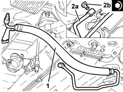
Applies to: engines: 1.6 TS , 1.8 TS; all production periods; only with equipment: Right hand drive
1. Secure the pipe from pump to power steering box with the fixing band.
2. Connect the pipe from the pump to the power steering box (2a), power steering box side, and tighten the connector (2b) to the recommended torque.
| Fastening | Component | Ø | Value (daNm) |
|---|---|---|---|---|
2b | Connector | PIPE BTWN PUMP + POWER STEERING BOX | M16 | (Power steering pump side) 3.8 - 4.2 |
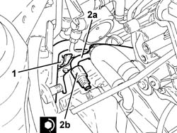
Applies to: engines: 1.6 TS , 1.8 TS; all production periods; only with equipment: Right hand drive
Fit the air flow switching device actuator in its seating, connect the linkage and fix it using the bolts.
Connect the vacuum intake pipe.
Connect the electrical connection to the variable geometry solenoid valve.
Connect the pipes to the power steering fluid reservoir, then fit it in its seating and secure with its bolts.
Place the coolant return pipe to the engine cooling system reservoir back in its housing and fix it using the bands.
Fix the fue vapour recirculation pipe with the band on the power steering fluid reservoir.
Connect the rapid attachment for the fuel vapour recirculation pipe.
1008C10 power unit upper reaction link r r .
1016A40 ignition coil cover on cylinder head- r+r .
1076A32 exhaust rigid mount - r r .
1076B50 exhaust pipe attachment to engine - r + r .
7055B54 under-engine guard - r r .
Connect the battery terminal (-).
Fill the power steering circuit with the recommended fluid.
 | Type | Component | Name | Qty. |
|---|---|---|---|---|
- | Fluid | POWER ASSISTED STEERING CIRCUIT | TUTELA GI/A | - |
Bleed the power steering system as described below.
With the front wheels raised off the ground, with the engine switched off, carry out 4-5 complete steering wheel rotation cycles (left and right).
Check and, if necessary, top up the fluid level in the reservoir.
Position the vehicle on the ground and start up the engine.
Carry out 4 - 5 complete steering wheel rotations (right and left).
Top up the fluid level in the reservoir.
Applies to: engines: 2.5 V6; all production periods; only with equipment: Right hand drive
Removing
RefittingPosition the vehicle on the ramp.
Drain the power steering fluid from the reservoir using a suitable syringe.
4450B10 Front WHEEL (one) - R.R. (left).
7055B54 under-engine guard - r r
1. Undo the nuts (1a) and disconnect the front section of the exhaust pipe (1b) from the manifold.
2. Undo the nuts (2a) and remove heat shield (2b) from the power steering box.
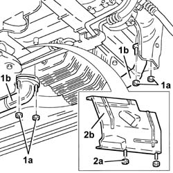
Applies to: engines: 2.5 V6; all production periods; only with equipment: Right hand drive
1. Undo the bolts (1a) and nut (1b), then remove the power steering pipe rear mount (1c).
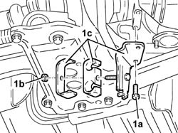
Applies to: engines: 2.5 V6; all production periods; only with equipment: Right hand drive
1. Undo the bolts (1a) and nut (1b), then remove the power steering pipe front mount (1c).
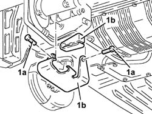
Applies to: engines: 2.5 V6; all production periods; only with equipment: Right hand drive
1. Undo the connector (1a) and disconnect the delivery pipe from pump to power steering box (1b), steering box side.
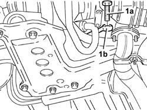
Applies to: engines: 2.5 V6; all production periods; only with equipment: Right hand drive
1. Undo the nut (1a) securing the engine oil dipstick assembly (1b) to the crankcase.
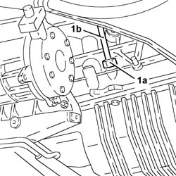
Applies to: engines: 2.5 V6; all production periods; only with equipment: Right hand drive
1. Undo the bolt (1a) and remove the bracket securing the air conditioning system hoses (1b).
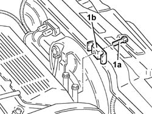
Applies to: engines: 2.5 V6; all production periods; only with equipment: Right hand drive
1. Undo the bolts (1a) and move engine oil dipstick bracket (1b) aside.
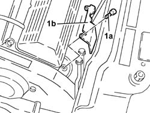
Applies to: engines: 2.5 V6; all production periods; only with equipment: Right hand drive
1. Disconnect the connector (1a) on the delivery pipe from pump to power steering box (1b), pump side.
2. Withdraw and remove the delivery pipe from pump to power steering box.
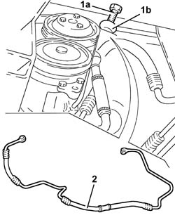
Applies to: engines: 2.5 V6; all production periods; only with equipment: Right hand drive
Refitting
Removing1. Refit in its seating the delivery pipe from pump to power steering box.
2. Connect the pipe carrying fluid to power steering box (2a)and tighten the connector (2b) to the specified torque.
| Fastening | Component | Ø | Value (daNm) |
|---|---|---|---|---|
2b | Connector | PIPE BTWN PUMP + POWER STEERING BOX | M14 | Power steering box side 3.8 - 4.2 |
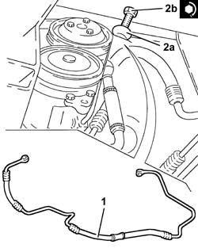
Applies to: engines: 2.5 V6; all production periods; only with equipment: Right hand drive
Place the engine oil dipstick assembly back in its housing and fix it using the bolts.
Fit the air conditioning hose mounting bracket and fix it using the bolt.
Tighten the nut securing the tube for the oil dipstick to the engine block.
1. Connect the delivery pipe from pump to power steering box (1a) to the power steering box and tighten the connector (1b) to the specified torque.
| Fastening | Component | Ø | Value (daNm) |
|---|---|---|---|---|
1b | Connector | PIPE BTWN PUMP + POWER STEERING BOX | M16 | Pump side 3.8 - 4.2 |
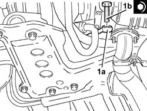
Applies to: engines: 2.5 V6; all production periods; only with equipment: Right hand drive
Fit the power steering pipe front mount and fix it using the bolts.
Fit the power steering pipe rear mount and fix it using the bolts and nut.
Fit the power steering box heat shield and fix it using the nuts.
Fit the front exhaust pipe sections to the manifolds and secure using the nuts.
7055B54 under-engine guard - r r
4450B10 Front WHEEL (one) - R.R. (Right side)
Fill the power steering circuit with the recommended fluid.
| Type | Component | Name | Qty. |
|---|---|---|---|---|
- | Fluid | POWER ASSISTED STEERING CIRCUIT | TUTELA GI/A | - |
Bleed the power steering system as described below.
With the front wheels raised off the ground, with the engine switched off, carry out 4-5 complete steering wheel rotation cycles (left and right).
Check and, if necessary, top up the fluid level in the reservoir.
Position the vehicle on the ground and start up the engine.
Carry out 4 - 5 complete steering wheel rotations (right and left).
Top up the fluid level in the reservoir.
Applies to: engines: 2.4 JTD 10v; all production periods; only with equipment: Right hand drive
Removing
RefittingPosition the vehicle on the ramp.
1. Undo the bolts (1a) and remove the sound insulation cover (1b).
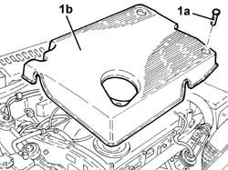
Applies to: engines: 2.4 JTD 10v; all production periods; only with equipment: Right hand drive
1. Undo the nut (1a) and move the plug preheating control unit (1b) from the bonnet bulkhead.
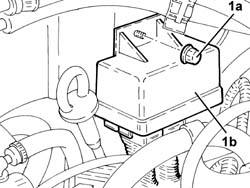
Applies to: engines: 2.4 JTD 10v; all production periods; only with equipment: Right hand drive
Drain the power steering fluid from the reservoir using a suitable syringe.
1. Disconnect the connector on the delivery pipe from pump to power steering reservoir, pump side.
2. Undo the bolt securing the bracket for the delivery pipe from pump to steering box.
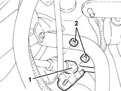
Applies to: engines: 2.4 JTD 10v; all production periods; only with equipment: Right hand drive
7055B54 under-engine guard - r r
1. Undo the connector (1a) and disconnect the delivery pipe from pump to power steering box (1b), steering box side.
2. Remove the delivery pipe from pump to power steering box after disengaging it from the bands.
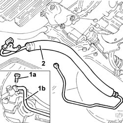
Applies to: engines: 2.4 JTD 10v; all production periods; only with equipment: Right hand drive
Refitting
RemovingPlace the delivery pipe from pump to power steering box back in its housing and secure it using the bands.
Connect the supply pipe from the power assisted steering pump to the box, power assisted steering box side, and tighten the connector to the recommended torque.
| Fastening | Component | Ø | Value (daNm) |
|---|---|---|---|---|
- | Connector | PIPE BTWN PUMP + POWER STEERING BOX | M14 | Power steering box side 3.8 - 4.2 |
7055B54 under-engine guard - r r
Tighten the bolt securing the bracket for the delivery pipe from pump to power steering box.
Tighten the connector for the supply pipe between pump and power steering box, pump side, to the specified torque.
| Fastening | Component | Ø | Value (daNm) |
|---|---|---|---|---|
- | Connector | PIPE BTWN PUMP + POWER STEERING BOX | M16 | (Power steering pump side) 3.8 - 4.2 |
Replace the plug preheating control unit in its housing and secure it using the relevant nut.
Place the soundproof cover back in its housing and secure it using the bolt.
Fill the power steering circuit with the recommended fluid.
| Type | Component | Name | Qty. |
|---|---|---|---|---|
- | Fluid | POWER ASSISTED STEERING CIRCUIT | TUTELA GI/A | - |
Bleed the power steering system as described below.
With the front wheels raised off the ground, with the engine switched off, carry out 4-5 complete steering wheel rotation cycles (left and right).
Check and, if necessary, top up the fluid level in the reservoir.
Position the vehicle on the ground and start up the engine.
Carry out 4 - 5 complete steering wheel rotations (right and left).
Top up the fluid level in the reservoir.
Topics linked from this page (8)
- 1008C10 power unit upper reaction link r r
- 1016A40 ignition coil cover on cylinder head- r+r
- 1076A32 exhaust rigid mount - r r
- 1076B50 exhaust pipe attachment to engine - r + r
- 4450B10 Front WHEEL (one) - R.R.
- 7055B54 under-engine guard - r r
- A1B Battery ( BATTERY NEGATIVE )
- L15 Variable geometry control solenoid